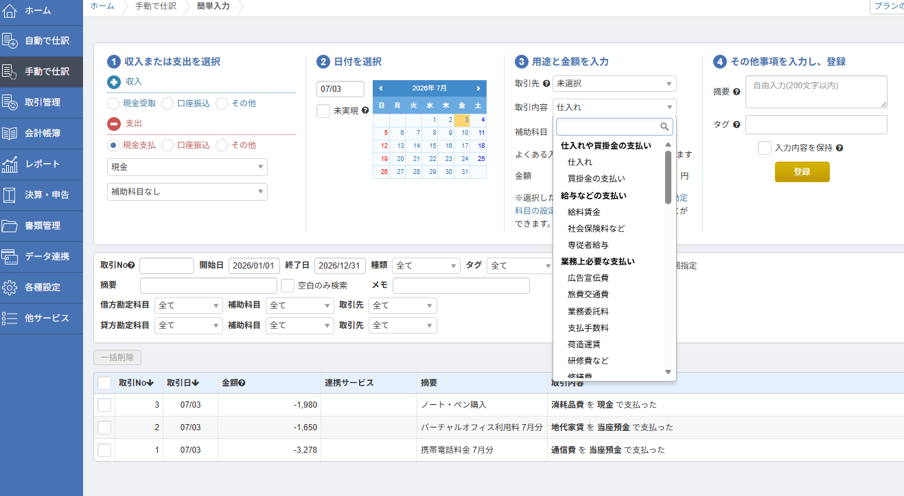
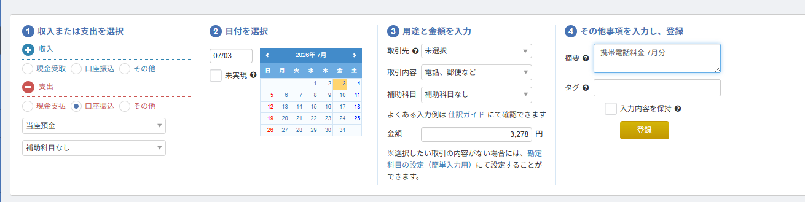
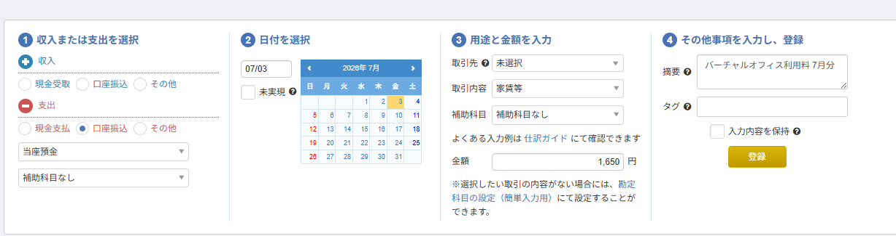
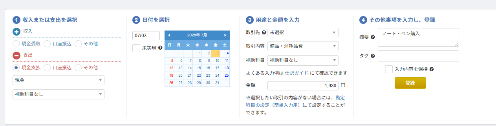
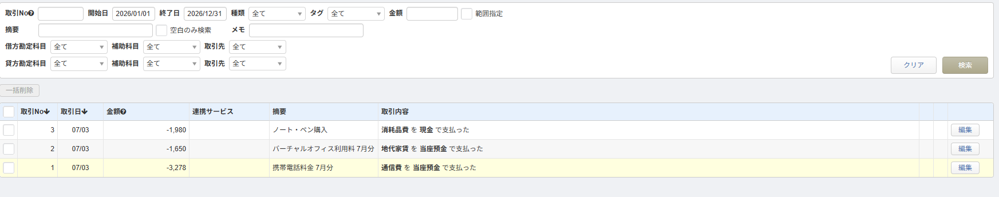

2026.07.04
【実演】会計ソフトに経費を入力してみた｜初心者が3件で慣れた記録
「会計ソフト、画面を開いた瞬間に閉じた」
── そんな経験、ありませんか。
所長もそうでした。
勘定科目の一覧がずらっと並んだ瞬間、「……これは、ちょっと身構えますね」と画面の前で固まりました。
でも、実際にやってみたら 3件入力するのに5分もかからなかった。
この記事では、会計ソフト「マネーフォワード確定申告」の無料プランを使って、経費を3件入力した記録をそのまま残します。
「本当に自分にもできるのか？」と不安な方は、この記事を横に並べながら一緒に手を動かしてみてください。
先に結論
- 使ったのはマネーフォワード確定申告（無料プラン）
- 入力したのは「通信費」「地代家賃」「消耗品費」の3件だけ
- かかった時間は約5分。簿記の知識ゼロでもいけた
- 勘定科目は覚えなくて大丈夫。一覧から選ぶだけ
- まず仕訳の感覚をつかみたいなら、無料ツールで練習してからでもOK
使った会計ソフトと選んだ理由
今回使ったのはマネーフォワード確定申告。
理由は単純で、無料プランがあるから。
マネーフォワードの無料プランは、月15件まで仕訳を入力できます。
「まず触ってみたい」「経費入力ってどんな感じか体験したい」という段階なら、これで十分。
期間制限もないので、焦らず自分のペースで試せます。
もうひとつの候補だったfreeeは、30日間の無料トライアルがあります。
ただ、トライアル期間を過ぎると有料プラン（スターター：年払い980円/月〜）に移行するので、「とりあえず試す」にはマネーフォワードの方がハードルが低い。
→ freee vs マネーフォワード、個人事業主はどっちを選ぶべき？【正直に比較】
入力画面を開いた瞬間の正直な感想
マネーフォワードにログインして「手動で仕訳」→「簡単入力」を開くと、こんな画面が出てきます。

正直な感想：「取引内容」のプルダウンが長い。
「仕入れ」「買掛金の支払い」「給料賃金」「社会保険料」…… 見慣れない単語がずらっと並んでいます。
ここで多くの方が心折れるのではないでしょうか。
でも安心してください。
個人事業主が副業レベルで使う科目は、実はほんの数種類。
「業務上必要な支払い」の中にある通信費・地代家賃・消耗品費あたりを覚えておけば、日常の経費はほぼカバーできます。
実演① 通信費 ── 携帯電話料金を入力する
まずは一番わかりやすいところから。毎月の携帯電話料金です。
入力内容
| 項目 | 入力した値 |
|---|---|
| 収入/支出 | 支出 |
| 支払い方法 | 口座振込 |
| 日付 | 7/3 |
| 取引内容 | 業務上必要な支払い → 通信費 |
| 金額 | 3,278円 |
| 摘要 | 携帯電話料金 7月分 |

迷ったポイント：「口座振込」と「現金支払」どっち？
→ 携帯料金は銀行口座から引き落とされるので「口座振込」。クレジットカード払いの場合は、プライベートカードなら「その他（事業主借）」でもOK。
→ クレカで払った経費の仕訳ガイド
💡 家事按分が必要な場合
携帯をプライベートでも使っている場合、全額を経費にはできません。事業で使っている割合（たとえば30%）だけを経費にする「家事按分」が必要です。
→ 家事按分は何％にする？割合の決め方と実例
実演② 地代家賃 ── バーチャルオフィス利用料を入力する
次は、事業用の住所として使っているバーチャルオフィスの利用料。
自宅の住所を公開したくない個人事業主には、バーチャルオフィスは定番の選択肢です。
入力内容
| 項目 | 入力した値 |
|---|---|
| 収入/支出 | 支出 |
| 支払い方法 | 口座振込 |
| 日付 | 7/3 |
| 取引内容 | 業務上必要な支払い → 地代家賃 |
| 金額 | 1,650円 |
| 摘要 | バーチャルオフィス利用料 7月分 |

ポイント：バーチャルオフィスの勘定科目は「地代家賃」で問題ありません。実際のオフィスを借りていなくても、事業用住所の利用料は地代家賃として処理できます。
実演③ 消耗品費 ── 文房具を入力する
最後は一番シンプルな経費。文房具をコンビニで買ったケースです。
入力内容
| 項目 | 入力した値 |
|---|---|
| 収入/支出 | 支出 |
| 支払い方法 | 現金支払 |
| 日付 | 7/3 |
| 取引内容 | 業務上必要な支払い → 消耗品費 |
| 金額 | 1,980円 |
| 摘要 | ノート・ペン購入 |

これは現金で買ったので「現金支払」を選択。
レシートさえ保管しておけば、帳簿上はこれで完了です。
3件入力した結果 ── 仕訳一覧画面
3件の入力が終わると、仕訳一覧にこう表示されます。

| 取引No | 取引日 | 金額 | 摘要 | 取引内容 |
|---|---|---|---|---|
| 3 | 07/03 | -1,980 | ノート・ペン購入 | 消耗品費 を 現金 で支払った |
| 2 | 07/03 | -1,650 | バーチャルオフィス利用料 7月分 | 地代家賃 を 当座預金 で支払った |
| 1 | 07/03 | -3,278 | 携帯電話料金 7月分 | 通信費 を 当座預金 で支払った |
所要時間：約5分。
簿記の知識ゼロ、会計ソフト初体験で、この結果。
正直、「勘定科目を一覧から選ぶだけ」というのが大きい。自分で科目名を思い出して入力する必要がないので、知識がなくてもなんとかなります。
正直に言うと、迷ったところもあります
「5分でできた」とは書きましたが、迷ったポイントがなかったわけじゃない。正直に記録しておきます。
① 取引内容の選択肢が多すぎる
「仕入れ」「買掛金」「給料賃金」…… 会社の経理が使うような科目がずらっと並んでいます。
副業レベルの個人事業主には関係ないものが大半なのに、同じ画面に出てくるので圧倒されてしまいます。
「業務上必要な支払い」のグループだけ見ればいい、と気づくまでに少し時間がかかりました。
② 「口座振込」と「現金支払」の使い分け
直感で選べるようでいて、微妙に迷います。
クレジットカード払いの場合は？ PayPayの場合は？ と考え始めると手が止まりますよね。
→ 結論：プライベートのお金で払ったものは「その他（事業主借）」にしてしまえば大丈夫です。
③ 摘要に何を書けばいいかわからない
「携帯電話料金 7月分」で正解？ もっと詳しく書くべき？ と迷いました。
→ 結論：あとで見返して「何の支払いか」わかれば十分です。税務調査で聞かれたときに説明できるレベルの情報があれば問題ありません。
まず感覚をつかみたいなら ── 無料で練習する方法
「いきなり会計ソフトに登録するのはハードルが高い」
「そもそも仕訳って何？ 借方・貸方って？」
そう思った方は、まず仕訳の感覚をつかむところから始めるのも手です。
当サイト「青色申告かんたん会計」は、ブラウザだけで使える無料の会計練習ツールです。
会員登録不要、データはすべてブラウザ内に保存されるので、個人情報を入力する必要もありません。
練習ツールで仕訳の感覚をつかんでから、本格的な会計ソフトに移行する。
この順番なら、会計ソフトの画面を開いたときに「あ、これ見たことある」と思えるので、挫折しにくくなります。
まとめ ── 会計ソフトの経費入力は「3件やれば慣れる」
- マネーフォワード確定申告の無料プランで十分始められる（月15件まで）
- 勘定科目は覚えなくて大丈夫。一覧から選ぶだけ
- 最初に入力すべきは通信費・地代家賃・消耗品費あたりの身近な経費
- 摘要は「あとで見てわかる」レベルでOK
- 3件入力すれば操作に慣れる。最初の1件が一番むずかしい
所長も最初は「これは難しそうだ……」と身構えていました。
でも実際にやってみると、3件入力する頃には「あれ、全部同じ流れですね」と気づきます。
難しいのは最初の1件だけ。そこさえ超えてしまえば、あとは同じ操作の繰り返しです。